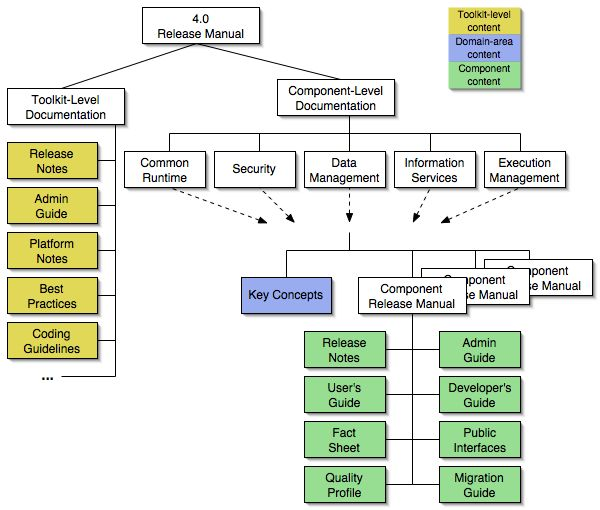

We have put an unprecedented amount of effort into producing documentation for GT4. There is still much to do and we have many future improvements planned, but it is our hope that you'll be pleased with our progress thus far.
Because there are so many components in the Globus Toolkit it can be intimidating to begin working with GT4. To help you find your way, we've tried to consistently follow a few basic principles in our documentation:
- The same documentation structure is applied to all components. This means that GridFTP, for instance, will have the same type of information available, and present it in the same order, as WS GRAM.
- If a subsection of a document does not apply to the component it is marked as such so you will know that it does not apply.
- If a subsection is missing for a particular component it is marked as such, so that you do not waste time searching for information that doesn't exist.
In order to track problems and encourage ongoing improvements in our documentation, you can now file bugs on the "Documentation" product in the GT problem tracking system. Please help us improve our documentation by filing bugs!
The GT4 release manual is composed of several smaller documents, each of which falls into one of three categories:
- Toolkit-Level content: documents applying to the toolkit in general
- Domain-Area content: documents applying to one of the five broad areas of the toolkit (Security, Execution Management, Data Management, Information Services, Common Runtime)
- Component-Level content: documents applying to an individual component (GridFTP, the Index Service, WS GRAM, etc.)
The following diagram illustrates the GT4 documentation structure:

We also welcome your documentation-related contributions. Please consider contributing your own Globus-related documents to the The Globus Documentation Project.
{kind=link}